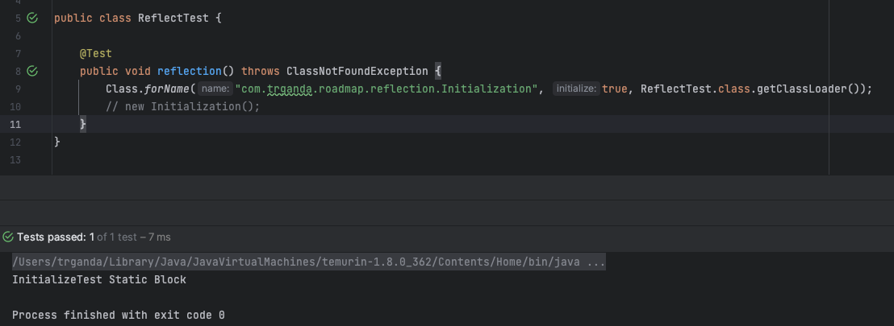
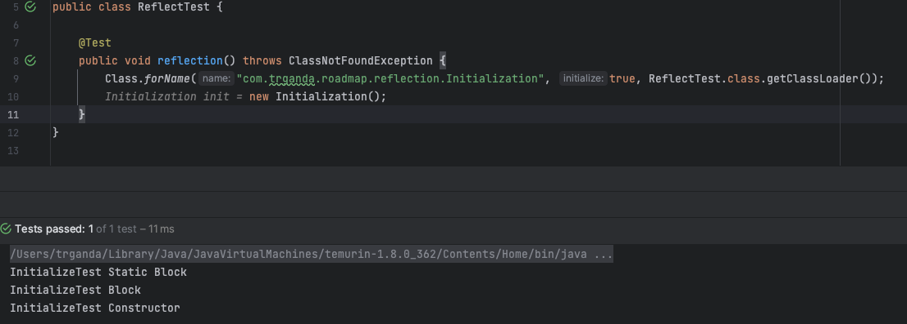

反射，是反序列化的基础，了解 Java 的反射机制能够更好的理解反序列化漏洞。
反射是一种运行时机制，能够让程序在运行时了解自身的结构。具体点来讲，一个类的方法可以在运行时查看自身所属类的有哪些成员，哪些方法，甚至是执行这些方法。该机制的特点是，为 Java 提供了类似动态语言的特性。
反射相关的工具类主要位于 java.lang.reflect 包和 java.lang.Class 中。
获取 Class 对象
public void execute(String className, String methodName) throws Exception {
Class clazz = Class.forName(className);
clazz.getMethod(methodName).invoke(clazz.newInstance());
}上面的代码展示了如何在 Java 中使用反射，这段代码根据传入的参数，获取指定类的指定方法。其中使用了几个常用的反射方法：
java.lang.Class#forName()：获取Class对象java.lang.Class#getMethod()：获取Class对象中的方法java.lang.reflect.Method#invoke()：调用从Class中获取的方法java.lang.Class#newInstance()：实例化一个Class对象
java.lang.Class是对 Java 字节码的一种抽象。
forName() 方法并不是获取 Class 对象的唯一方式，Java 中获取 Class 对象的方法有以下几种：
java.lang.Class#forName()Object.class：已知类名，并且它已经被加载的情况下，通过访问它的 class 属性即可获取它的 Class 对象。（不能算作反射，不具备动态特性）obj.getClass()：上下午中已有实例化的对象obj，调用它的getClass()方法
在安全研究中，我们使⽤用反射的一⼤目的，就是绕过某些沙盒。⽐如，上下⽂中如果只有
Integer类型的 数字，我们如何获取到可以执⾏命令的Runtime类呢？也许可以这样 (伪代码)：1.getClass().forName("java.lang.Runtime")。—— p 牛
forName() 方法有两个重载形式，
public static Class<?> forName(String className);
public static Class<?> forName(String name, boolean initialize, ClassLoader loader)两种形式在下面的参数情况下作用是等价的
forName(name)
// 等价
forName(name, true, loader)第二个方法的后两个参数，initialize 表示是否对类进行初始化『注意不是实例化』，loader 表示类加载器，告诉 Java 虚拟机如何找到并加载对应的类，后面还会提及。
这部分内容和 Java 虚拟机的工作原理有关，可以参看《深入理解 JVM 虚拟机》。
下面通过一段代码加深对 initialize 的理解，考虑下面的类 InitializeTest，如果使用 forName() 加载它会执行哪部分的代码？
public class Initialization {
{
System.out.println("InitializeTest Block");
}
static {
System.out.println("InitializeTest Static Block");
}
public InitializeTest() {
System.out.println("InitializeTest Constructor");
}
}运行下面的代码
public class ReflectTest {
@Test
public void reflection() throws ClassNotFoundException {
Class.forName("com.trganda.roadmap.reflection.Initialization", true, ReflectTest.class.getClassLoader());
// new Initialization();
}
}可以看到，只有 static 代码块被执行了。

而由 {} 包裹的代码块会在实例化对象时执行，且早于构造函数内的语句。可以通过删除注释来验证这一点。

所以，会经常看到一些恶意类会将代码放在类的全局静态代码块中，假设下面代码的 name 参数可控
public void ref(String name) throws Exception {
Class.forName(name);
}那么可以让它加载下面这个类 TouchFile，至于 TouchFile 是如何进入目标类加载路径的就是另一回事情了。
import java.lang.Runtime;
import java.lang.Process;
public class TouchFile {
static {
try {
Runtime rt = Runtime.getRuntime();
String[] commands = {"touch", "/tmp/success"};
Process pc = rt.exec(commands);
pc.waitFor();
} catch (Exception e) {
// do nothing
} }
}方法调用
反射最大的作用之一就是调用类的方法，包括构造方法，公有或私有的方法。
获取构造方法
在调用一个类对象的方法之前，首先需要一个实例化的对象，而通过反射来获取一个实例化的对象有两种方式：
java.lang.Class#newInstance()java.lang.reflect.Constructor#newInstance()
java.lang.Class#newInstance() 方式会调用类的无参构造函数，并返回一个实例化对象。比如对于 Runtime，通过这种方法创建一个 Runtime 对象
Class<?> clazz = Class.forName("java.lang.Runtime");
// This will lead exception "java.lang.IllegalAccessException: Classs
// com.trganda.roadmap.reflection.ReflectTest can not access a member of class
// java.lang.Runtime with modifiers "private""
Runtime rt = (Runtime) clazz.newInstance();但是，这样会导致报错
can not access a member of class java.lang.Runtime with modifiers "private"
at sun.reflect.Reflection.ensureMemberAccess(Reflection.java:102)
at java.lang.Class.newInstance(Class.java:436)
at ReflectTest.main(ReflectTest.java:10)
原因是 java.lang.Class#newInstance() 只会调用公开且无参的构造方法，而 Runtime 是一个单例模式设计的类，没有公开的构造方法。不过，可以通过调用 Runtime.getRuntim() 的方式获取 Runtime 对象，
Class<?> clazz = Class.forName("java.lang.Runtime");
clazz.getMethod("exec",
String.class).invoke(clazz.getMethod("getRuntime").invoke(clazz),
"calc.exe");而很多类的构造函数可能并不满足成功调用 java.lang.Class#newInstance() 的条件，此时需要借助第二种方式，以 java.lang.ProcessBuilder 来进行演示，它有两个构造函数，虽然是公开的，但是都需要传递参数
public ProcessBuilder(List<String> command) {
if (command == null)
throw new NullPointerException();
this.command = command;
}
public ProcessBuilder(String... command) {
this.command = new ArrayList<>(command.length);
for (String arg : command)
this.command.add(arg);
}这里需要借助 java.lang.Class#getConstructor 方法获取指定构造方法，再调用 java.lang.reflect.Constructor#newInstance() 获取实例化对象。
Class<?> clazz = Class.forName("java.lang.ProcessBuilder");
((ProcessBuilder)
clazz.getConstructor(List.class)
.newInstance(
Arrays.asList("open -a calculator"))).start();上面的代码用到了 Java 里的强制类型转换，有时候利用漏洞的时候『在表达式上下文中』是没有这种语法的。此时可以继续利用反射来完成这一步。
Class<?> clazz = Class.forName("java.lang.ProcessBuilder");
// with type cast
clazz.getMethod("start")
.invoke(
clazz.getConstructor(List.class)
.newInstance(
Collections.singletonList(
"open -a calculator")));获取私有方法
前面已经使用过 java.lang.Class#getMethod 方法，但该方法只能获取 public 方法，上一节使用的 也是如此
如果要获取到 private 方法，需要使用 getDeclaredConstructor/getDeclaredMethod 方法。
Class<?> clazz = Class.forName("java.lang.Runtime");
Constructor<?> m = clazz.getDeclaredConstructor();
m.setAccessible(true);
clazz.getMethod("exec", String.class).invoke(m.newInstance(), "open -a calculator");在获取 private 方法后，如果要调用它，还需要通过 setAccessible(true) 方法设置为允许访问，否则会报错。
成员访问
除了获取和调用方法外，反射还允许获取和修改类对象的成员。相应的方法为：
java.lang.Class#getField()：根据成员名获取指定的public成员java.lang.Class#getFields()：获取所有的public成员java.lang.Class#getDeclaredField()：根据成员名获取指定的成员java.lang.Class#getDeclaredFields()：获取所有的成员
其它的使用方式和获取方法是类似的，下面是一个示例
Class clazz = Class.forName("java.lang.ProcessBuilder");
ProcessBuilder processBuilder =
(ProcessBuilder)
clazz.getConstructor(List.class)
.newInstance(
Arrays.asList("open /System/Applications/Calculator.app"));
Field command = clazz.getField("command");
command.setAccessible(true);
command.set(processBuilder, Arrays.asList("whoami"));